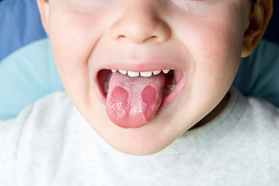
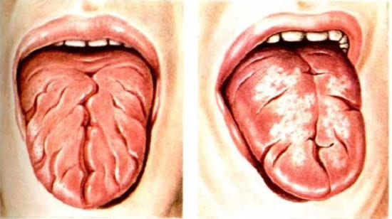

Географический язык встречается приблизительно у 3% людей, как у взрослых, так и у детей. Он получил такое название, поскольку поверхность языка действительно «поминает карту с участками красных пятен, окруженных неправильными белыми границами. Обычно это наблюдается только на языке, но может появиться на дне ротовой полости и на нёбе. Красные и белые участки на языке со временем могут увеличиваться или уменьшаться, возникая на некоторых участках языка и исчезая, чтобы появиться затем в другом месте.
СИМПТОМЫ
У большинства детей с географическим языком нет никаких проявлений, кроме внешнего вида языка, эту проблему принято считать безболезненной и безобидной особенностью. Иногда у детей могут быть следующие симптомы:
• чувство жжения во рту;
• затрудненное потребление пищи,
• плохой сон;
• повышенная чувствительность к горячей или острой пище.

Географический язык иногда путают с другими проблемами у детей, такими как афтозный стоматит или ожоги языка. Причина этого заболевания неизвестна, не исключено, что она передается по наследству. |
ЛЕЧЕНИЕ
На данный момент методы лечения географического языка неизвестны. Обычно симптомы самостоятельно проходят со временем. Старайтесь не кормить ребенка горячей или острой пищей, если она раздражает его язык.
Здоровье ребенка от докторов Сирс / Сирс У. и др.